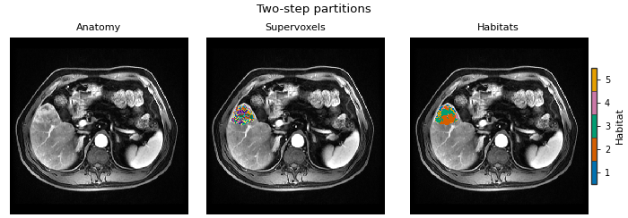
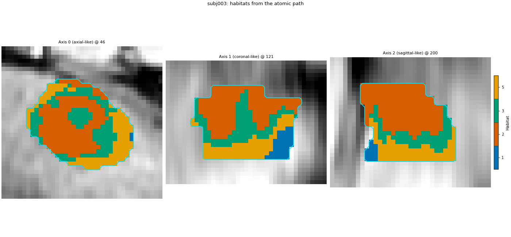

Note
Go to the end to download the full example code.
Two-step habitats from atomic components#
Background. Two-step habitats with a Spec
declares a whole habitat study in one HabitatSpec
and runs it with one Study(spec).fit_predict(...) call (serial
RunPolicy, continue on subject failure). Behind that call sit a
handful of ordinary Python objects: a voxel feature extractor, two
preprocessing chains, a supervoxelizer, a habitat model fitter, an
assigner and four habitat feature extractors. Each of them is public
and can be called on one subject, in memory, without a spec, a YAML
file or an output folder.
Purpose. You will rebuild the approved two-step analysis of
Two-step habitats with a Spec (two training
patients, four DCE phases, ROI LAP, seed 0) from those components,
as a plain per-subject loop. Then Study runs the same spec, and the
page checks that both paths give the same habitat labels voxel for
voxel, the same model id and the same feature table. Finally the
atomic path labels a third, new patient, and the atomic model is
handed to Study.from_model to label the same patient again.
When to use. When you want to see what Study does inside, or
when you need a single step in your own pipeline – a MONAI transform
chain, a notebook, a service – and do not want HABIT’s orchestration
around it. For a normal study, Study is shorter and records the
run manifest for you.
Analysis definition. The approved two-step definition, unchanged: raw intensities of four phases, subject-level winsorize + z-score, 30 k-means supervoxels, cohort-level 10-bin uniform binning, k-means with 2..10 habitats chosen by the elbow rule, nearest-centroid assignment, then volume, MSI, ITH and graph features. Nothing is varied; only the way the steps are called changes.
Key terms. Full definitions are on Concepts.
voxel field – the table of voxel features of one subject (one row per ROI voxel, one column per feature), plus where each voxel sits in the image.
subject-level chain – preprocessing that uses each patient’s own statistics; it has no fitted state, so it is simply called.
supervoxelization – the supervoxel label map of one subject and one feature row per supervoxel.
cohort-level chain – preprocessing fitted once on the pooled training rows; its fitted state must be stored with the model.
fitter / model / assigner – the fitter learns centroids from the pooled rows and returns a
HabitatModel; the model’s assigner paints habitat ids onto one subject.habitat feature extractor – turns one subject’s habitat map into one row of the feature table.
Two things Study does for you are also done here, just less
visibly. First, it aligns each ROI mask onto the image grid; the raw
voxel feature extractor does that itself (the demo masks have a
different origin and direction from their images), so calling the
extractor directly gets the same aligned voxels. Second, Study
seeds every stochastic component with spec.random_seed; below the
same seed is passed to each component with set_random_state(0),
which is why the two paths can agree bit for bit.
Load the cohort#
Same data, same split as the Spec page: two training patients (subj001, subj002) and one new patient (subj003). sphinx_gallery_thumbnail_number = 1
from pathlib import Path
import matplotlib.pyplot as plt
import numpy as np
import pandas as pd
from habit.contracts import cohort_from_directory
from habit.datasets import fetch_demo
from habit.feature_preprocessing import (
ZScoreScaling,
SubjectPreprocessingChain,
Winsorizing,
)
from habit.habitat_features import (
GraphHabitatFeatures,
HabitatVolumeFeatures,
IthHabitatFeatures,
MsiHabitatFeatures,
)
from habit.habitat_model import KMeansHabitatModelFitter
from habit.execution import backend_from_policy
from habit.recipes import Study
from habit.spec import HabitatSpec, Spec, Stage
from habit.spec.policy import RunPolicy
from habit.supervoxel import KMeansSupervoxelizer
from habit.viz import plot_habitat_overlay, plot_partition_triptych
from habit.voxel_features import RawVoxelFeatures
# Change DATA / MODALITIES / ROI to your preprocessed layout.
DATA = fetch_demo()
MODALITIES = ("pre_contrast", "LAP", "PVP", "delay_3min")
ROI = "LAP"
cohort = cohort_from_directory(DATA, modalities=MODALITIES, roi=ROI)
train, new_patient = cohort[:2], cohort[2:3]
# The one seed used for every random step. Study uses spec.random_seed.
SEED = 0
Path("out").mkdir(exist_ok=True)
HABIT demo data (cached)
DATA (preprocessed root): C:\Users\dongm\.habit_data\demo-data-v1\preprocessed
On-disk inventory of this folder:
subjects (5): subj001, subj002, subj003, subj004, subj005
image series: LAP, PVP, delay_3min, pre_contrast
mask keys: LAP, PVP, delay_3min, pre_contrast
example image: images/subj001/delay_3min/WATER__BH_Ax_LAVA_Flex_3min_Series0012.nrrd
example mask: masks/subj001/delay_3min/WATER__BH_Ax_LAVA_Flex_10min_Series0017_mask.nrrd
Your own data must use the same folder tree (change IDs / series names):
DATA/
images/<subject_id>/<modality>/<one image file>
masks/<subject_id>/<roi>/<one mask file>
Then load it with the same call the demos use:
cohort = cohort_from_directory(DATA, modalities=("LAP",), roi="LAP")
Swap DATA / modalities / roi to match your tree. Mask key is often the
same as one image series (here LAP).
Build the components#
Each object below is the Python twin of one stage in the spec of Two-step habitats with a Spec. Nothing is computed yet: the objects only hold their settings.
# extract: one intensity column per DCE phase, voxels inside the ROI.
# The extractor also resamples the ROI mask onto the image grid when
# their geometry differs.
extractor = RawVoxelFeatures(modalities=list(MODALITIES), roi=ROI)
# preprocess + preprocess2 (subject-level): clip each column to that
# patient's own 1st..99th percentile, then rescale it to 0..1 with that
# patient's own min and max. The chain has no fitted state: calling it
# on a patient only ever uses that patient's numbers. HABIT puts a
# mean imputation first on its own, so missing values never reach the
# scalers (it shows up in the chain's spec).
subject_chain = SubjectPreprocessingChain([Winsorizing(winsor_limits=(0.01, 0.01)), ZScoreScaling()])
# partition: k-means with 30 supervoxels inside each tumour. k-means
# starts from random centres, so the seed is fixed; without it a rerun
# could draw different supervoxel borders.
supervoxelizer = KMeansSupervoxelizer(n_supervoxels=30)
supervoxelizer.set_random_state(SEED)
# fit: one cohort k-means that tries 2..10 habitats and keeps the elbow.
# n_init=10 restarts every candidate count from 10 random starts. It is
# seeded for the same reason as the supervoxelizer.
fitter = KMeansHabitatModelFitter(min_habitats=2, max_habitats=10, validation="elbow", n_init=10)
fitter.set_random_state(SEED)
# quantify: four habitat feature families, each giving one row per subject.
feature_extractors = [
HabitatVolumeFeatures(),
MsiHabitatFeatures(),
IthHabitatFeatures(),
GraphHabitatFeatures(include_extended_metrics=False),
]
print(subject_chain.spec)
Spec(name='subject_feature_preprocessor', params={'steps': [{'name': 'impute', 'params': {'strategy': 'mean'}, 'version': '1.0'}, {'name': 'winsorize', 'params': {'across_features': False, 'winsor_limits': [0.01, 0.01]}, 'version': '1.0'}, {'name': 'zscore', 'params': {'across_features': False}, 'version': '1.0'}]}, version='1.0')
Step 1: per-subject features and supervoxels#
An explicit loop over subjects. Every call takes ONE subject (or one subject’s result) and returns an in-memory object, so any line of this loop can be lifted into another pipeline on its own.
with_feature_frame swaps the feature table of the voxel field for
the preprocessed one and records which step produced it (the
produced_by label and the chain’s spec fingerprint go into the
provenance of everything computed afterwards).
units = []
for subject in train:
# Voxel field: one row per ROI voxel, one column per phase.
field = extractor(subject)
# Subject-level normalization with this patient's own statistics.
field = field.with_feature_frame(
subject_chain(field.feature_frame()),
produced_by="feature_preprocessing.subject.voxel",
spec_fingerprint=subject_chain.spec.fingerprint(),
)
# 30 supervoxels inside this tumour; one mean feature row per supervoxel.
units.append(supervoxelizer(field))
print(subject.subject_id, "voxels:", field.feature_frame().shape[0], "supervoxels:", units[-1].feature_frame().shape[0])
subj001 voxels: 34694 supervoxels: 30
subj002 voxels: 9858 supervoxels: 30
Step 2: pool the subject-normalized supervoxels#
pool is just a concatenation of every training subject’s
supervoxel rows. After per-feature per-subject z-score there is no
cohort-level binning or cohort z-score by default.
pooled = pd.concat([one.feature_frame() for one in units], ignore_index=True)
print("pooled training rows:", pooled.shape)
pooled_ready_units = list(units)
pooled training rows: (60, 4)
Step 3: fit the habitat model and assign labels#
The fitter clusters the subject-normalized supervoxel rows once for
the whole training cohort and returns a HabitatModel (the
centroids). New patients recompute their own subject z-score, then
meet these centroids — training mean/std are never applied to them.
model = fitter.fit(pooled_ready_units, cohort=train)
print(model.summary())
HabitatModel kmeans-3432f3b65bfec11a
habitats : 5
features (4) : pre_contrast, LAP, PVP, delay_3min
defining cohort : n=2
modalities : pre_contrast, LAP, PVP, delay_3min
cohort digest : cc1b16a34cc7478d...
produced by : habitat_model_fitter.kmeans
habit version : 3.0.0
random seed : 0
preprocessing state: inertia, selection_report, validation
How many habitats (elbow / Kneedle caveat)#
HABIT validation elbow is the same rule as kneedle. It runs
KneeLocator on k-means inertia (within-cluster sum of squares),
curve convex, direction decreasing (Satopaa, Albrecht, Irwin, and
Raghavan, 2011, Finding a “Kneedle” in a Haystack, IEEE ICDCS).
Normalize k and inertia to the unit square, draw the chord from the
first point to the last, and take the k farthest from that chord; a
smooth curve often places this knee to the right of the bend a person
sees. Literature “elbow” means inspecting within-cluster dispersion
versus k (Thorndike RL, 1953, Who belongs in the family?, Psychometrika
18(4):267-276) — not a second-difference formula. The discrete-curvature
elbow (visual elbow, computed) maximizes the second difference of
inertia (HABIT pre-v1.0 elbow); it is not a Thorndike formula. Habitat
maps below keep the Kneedle K. See
Clustering algorithm and number of habitats.
report = model.preprocessing_state["selection_report"]
candidates = [int(k) for k in report["candidates"]]
inertia = np.asarray(report["scores"][report["methods"][0]], dtype=float)
def discrete_curvature_elbow_k(cluster_range, inertia_scores):
"""Return k maximizing the second difference of inertia (pre-v1.0 elbow)."""
values = np.asarray(inertia_scores, dtype=float)
cluster_range = [int(k) for k in cluster_range]
if values.size < 3:
return int(cluster_range[int(np.argmin(values))])
return int(cluster_range[int(np.argmax(np.diff(values, n=2))) + 1])
k_kneedle = int(model.n_habitats)
k_discrete = discrete_curvature_elbow_k(candidates, inertia)
_k_table = {"elbow_kneedle": k_kneedle, "discrete_curvature_elbow": k_discrete}
for _name in ("silhouette", "calinski_harabasz", "davies_bouldin"):
_fitter = KMeansHabitatModelFitter(
min_habitats=2, max_habitats=10, validation=_name, n_init=10
)
_fitter.set_random_state(SEED)
_k_table[_name] = _fitter.fit(pooled_ready_units, cohort=train).n_habitats
print("K by criterion (sil/CH maximize; DB minimize; skip gap):")
for _name, _k in _k_table.items():
print(f" {_name}: {_k}")
# The assigner gives every supervoxel the id of its nearest centroid,
# then writes that id onto the supervoxel's voxels.
assigner = model.assigner("nearest_centroid")
atomic_maps = [assigner(one) for one in pooled_ready_units]
subject = train[0]
fig = plot_partition_triptych(subject.image("LAP"), units[0], atomic_maps[0], axis=0)
fig.savefig("out/atomic_triptych.png", dpi=150, bbox_inches="tight")
plt.show()

K by criterion (sil/CH maximize; DB minimize; skip gap):
elbow_kneedle: 5
discrete_curvature_elbow: 3
silhouette: 2
calinski_harabasz: 2
davies_bouldin: 2
F:\work\habit_project\habit\viz\habitat_core.py:1110: UserWarning: Display geometry conflict: image/anatomy direction does not match mask/label direction. Using the mask/label direction so coronal/sagittal superior-up follows the labelled anatomy. Pass direction= to override.
resolved_direction, resolved_spacing = resolve_display_geometry(
Step 4: the feature table#
Every habitat feature extractor is called as extractor(subject,
habitat_map) and returns a one-row table. join glues the four
families side by side; concat stacks the subjects.
rows = []
for one, one_map in zip(train, atomic_maps):
table = feature_extractors[0](one, one_map)
for feature_extractor in feature_extractors[1:]:
table = table.join(feature_extractor(one, one_map))
rows.append(table.frame)
atomic_table = pd.concat(rows, ignore_index=True)
print(atomic_table.shape[1], "columns")
print(atomic_table[["subject", "habitat_1_volume_fraction", "habitat_2_volume_fraction", "ith_score"]].round(3).to_string())
664 columns
subject habitat_1_volume_fraction habitat_2_volume_fraction ith_score
0 subj001 0.096 0.336 0.965
1 subj002 0.081 0.107 0.907
Check against Study#
The approved spec, run with Study. Same data, same seed, so the
labels must match voxel for voxel and the model id (a digest of the
fitter settings and the training subjects) must be the same. Each
check prints True or False.
spec = HabitatSpec(
name="full_pipeline_two_step",
stages=(
Stage("extract", Spec("raw", {"modalities": list(MODALITIES), "roi": ROI})),
Stage("preprocess", Spec("winsorize", {"winsor_limits": [0.01, 0.01]})),
Stage("preprocess2", Spec("zscore")),
Stage("partition", Spec("kmeans", {"n_supervoxels": 30})),
Stage("pool", Spec("pool")),
Stage("fit", Spec("kmeans", {"min_habitats": 2, "max_habitats": 10, "validation": "elbow", "n_init": 10})),
Stage("assign", Spec("nearest_centroid")),
Stage("volume", Spec("volume")),
Stage("msi", Spec("msi")),
Stage("ith", Spec("ith_score")),
Stage("graph", Spec("graph", {"include_extended_metrics": False})),
),
random_seed=SEED,
)
study = Study(spec)
study_result = study.fit_predict(train)
print("atomic model:", model.model_id, "| Study model:", study_result.habitat_model.model_id)
print("same model id:", model.model_id == study_result.habitat_model.model_id)
print("same number of habitats:", model.n_habitats == study_result.habitat_model.n_habitats)
for atomic_map, study_map in zip(atomic_maps, study_result.habitat_maps):
same = np.array_equal(atomic_map.label_array, study_map.label_array)
print(f"{atomic_map.subject_id}: labels identical = {same}")
study_table = study_result.features.frame
same_columns = list(atomic_table.columns) == list(study_table.columns)
numeric = atomic_table.select_dtypes("number").columns
same_values = np.allclose(
atomic_table[numeric].to_numpy(dtype=float),
study_table[numeric].to_numpy(dtype=float),
equal_nan=True,
)
print(f"feature table: same columns = {same_columns}, values allclose = {same_values}")
Cohort.map[_ComputeUnits]: 0%| | 0/2 [00:00<?, ?it/s]
Cohort.map[_ComputeUnits]: 50%|█████ | 1/2 [00:04<00:04, 4.71s/it]
Cohort.map[_ComputeUnits]: 100%|██████████| 2/2 [00:06<00:00, 3.33s/it]
Cohort.map[_ComputeUnits]: 100%|██████████| 2/2 [00:06<00:00, 3.33s/it]
Cohort.map[_AssignPrecomputedUnits]: 0%| | 0/2 [00:00<?, ?it/s]
Cohort.map[_AssignPrecomputedUnits]: 50%|█████ | 1/2 [00:01<00:01, 1.21s/it]
Cohort.map[_AssignPrecomputedUnits]: 100%|██████████| 2/2 [00:02<00:00, 1.08s/it]
Cohort.map[_AssignPrecomputedUnits]: 100%|██████████| 2/2 [00:02<00:00, 1.08s/it]
atomic model: kmeans-3432f3b65bfec11a | Study model: kmeans-3432f3b65bfec11a
same model id: True
same number of habitats: True
subj001: labels identical = True
subj002: labels identical = True
feature table: same columns = True, values allclose = True
Label a new patient with the atomic path#
A new patient goes through the same per-subject steps (its OWN winsorize 1% + z-score, its own 30 supervoxels), then the TRAINING centroids. Nothing is refitted; no cohort bin edges are applied.
new_subject = new_patient[0]
field = extractor(new_subject)
field = field.with_feature_frame(
subject_chain(field.feature_frame()),
produced_by="feature_preprocessing.subject.voxel",
spec_fingerprint=subject_chain.spec.fingerprint(),
)
new_units = supervoxelizer(field)
new_map = assigner(new_units)
# Same patient through the fitted Study, for comparison.
study_new = study.predict(new_patient)
print(
f"{new_subject.subject_id}: atomic == Study.predict: "
f"{np.array_equal(new_map.label_array, study_new.habitat_maps[0].label_array)}"
)
fig = plot_habitat_overlay(
new_subject.image("LAP"),
new_map,
title=f"{new_subject.subject_id}: habitats from the atomic path",
crop_to="labels",
)
fig.savefig("out/atomic_new_patient.png", dpi=150, bbox_inches="tight")
plt.show()

Cohort.map[_LabelAndDescribe]: 0%| | 0/1 [00:00<?, ?it/s]
Cohort.map[_LabelAndDescribe]: 100%|██████████| 1/1 [00:02<00:00, 2.48s/it]
Cohort.map[_LabelAndDescribe]: 100%|██████████| 1/1 [00:02<00:00, 2.49s/it]
subj003: atomic == Study.predict: True
F:\work\habit_project\habit\viz\habitat_overlay.py:806: UserWarning: Display geometry conflict: image/anatomy direction does not match mask/label direction. Using the mask/label direction so coronal/sagittal superior-up follows the labelled anatomy. Pass direction= to override.
resolved_direction, resolved_spacing = resolve_display_geometry(
Hand the atomic model to Study#
The model built above can also drive Study.predict. A model fitted
directly with fitter.fit(...) holds the centroids and the cohort
bin edges, but not the upstream stages (which voxel features, which
subject-level scaling, how many supervoxels). spec=spec supplies
them, so Study puts the new patient through the same stages before
the stored bin edges and centroids are applied.
from_model = Study.from_model(model, spec=spec).predict(new_patient)
print(
f"{new_subject.subject_id}: atomic == Study.from_model(atomic model): "
f"{np.array_equal(new_map.label_array, from_model.habitat_maps[0].label_array)}"
)
inside = np.asarray(new_map.label_array)
inside = inside[inside > 0]
ids, counts = np.unique(inside, return_counts=True)
for hid, count in zip(ids, counts):
print(f"{new_subject.subject_id} habitat {int(hid)}: {count / inside.size:.3f} of ROI voxels")
Cohort.map[_LabelAndDescribe]: 0%| | 0/1 [00:00<?, ?it/s]
Cohort.map[_LabelAndDescribe]: 100%|██████████| 1/1 [00:02<00:00, 2.57s/it]
Cohort.map[_LabelAndDescribe]: 100%|██████████| 1/1 [00:02<00:00, 2.57s/it]
subj003: atomic == Study.from_model(atomic model): True
subj003 habitat 1: 0.105 of ROI voxels
subj003 habitat 2: 0.415 of ROI voxels
subj003 habitat 3: 0.208 of ROI voxels
subj003 habitat 5: 0.272 of ROI voxels
How to read the result#
When this page was built, the atomic path produced:
30 supervoxels per training patient (34694 ROI voxels in subj001, 9858 in subj002), 60 pooled rows with 4 feature columns.
K = 4 habitats chosen by the elbow rule, and the same model id as
Study(same model id: True).Every “identical” / “allclose” check above printed
True: the label maps of both training patients, the 453-column feature table, and the new patient’s map from the atomic path,Study.predictandStudy.from_model(model, spec=spec).The new patient (subj003) uses all four habitats, with ROI fractions 0.191, 0.321, 0.396 and 0.092 for habitats 1 to 4.
The checks show that the components reproduce Study exactly on
this data and seed. They say nothing about whether K = 4 is a good
habitat definition; two patients are a demo, not a cohort.
Where to go next#
The other two designs (inside each subject, pooled voxels) built from components: Habitats inside each subject from atomic components.
These components on serial and process-pool backends: Atomic components on execution backends.
Each component on its own page, with its options: Advanced (supervoxels: Partitioning a ROI into supervoxels, fitting: Fitting a cohort habitat model, assigning: Assigning habitat labels).
Every class used here: API Reference.
Total running time of the script: (0 minutes 28.245 seconds)